Welcome to Liyue! Liyue is the Nation of Contracts as its God, the God of Geo, known as Rex Lapis. The story of Liyue starts with the God of Geo faking his death, with a contract with a affiliation renown around Teyvat known as The Fatui. The contract stated that once the people of Liyue could stand on their own, he would give his gnosis to the Fatui. The gnosis is the main power source of an archon so losing it would be very bad. Liyue is based on a Chinese culture and follows all the design and rites of it. In my opinion, Liyue is a very scenic region, the music is hovering on the left.
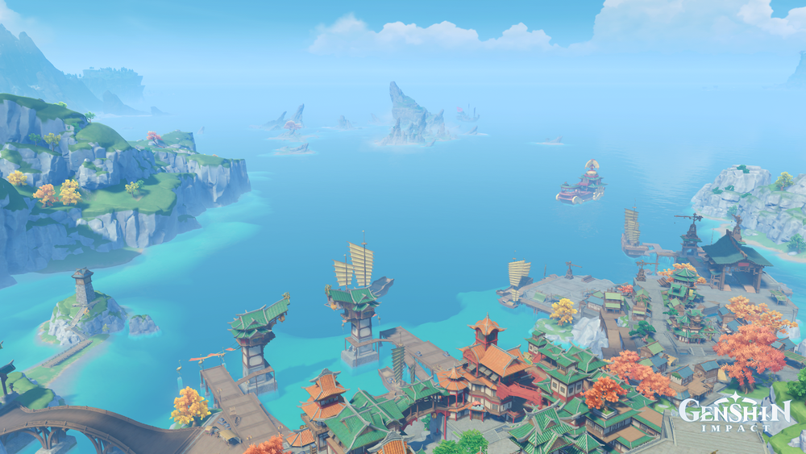
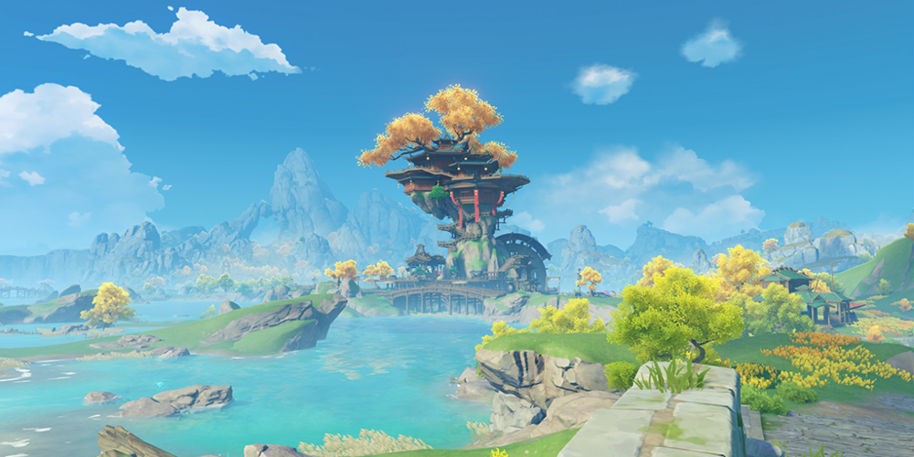
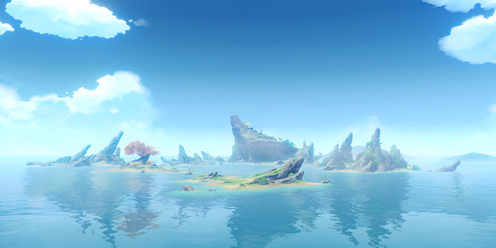
Liyue Harbor, Wangshu Inn, and Guyun Stone
You get to meet these characters.
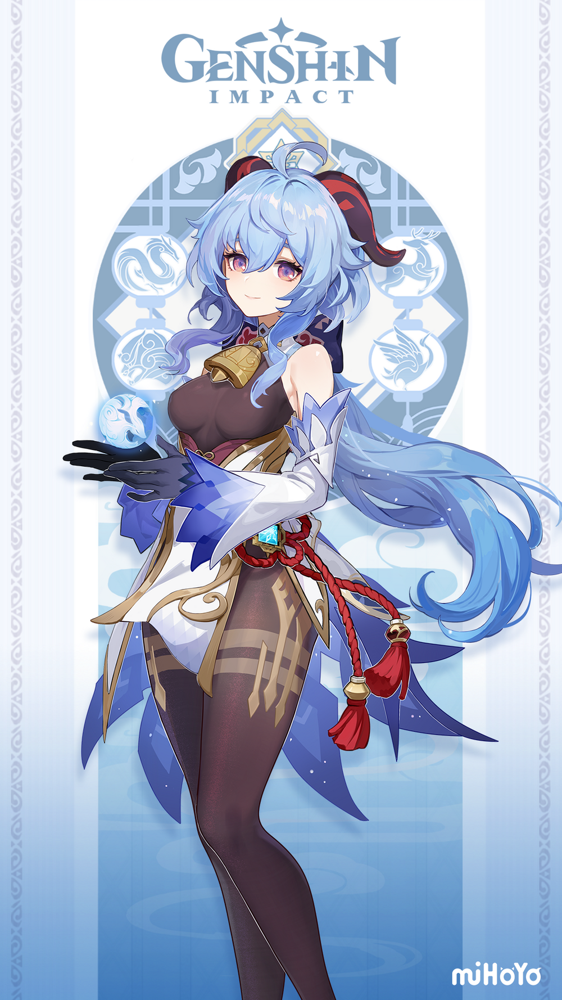
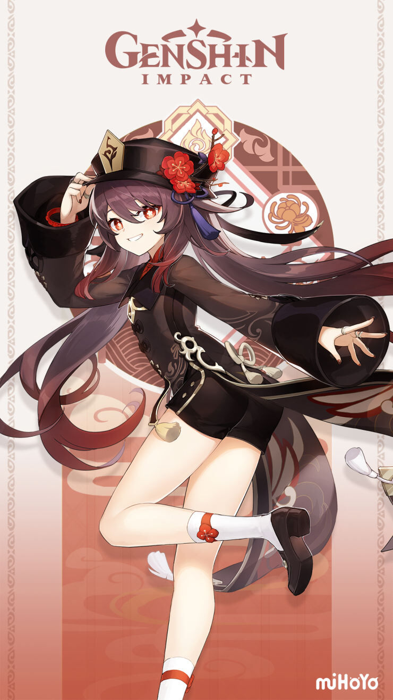
Xiao
Ganyu
Zhongli
Hu Tao
Keqing
Xiao is a 5-Star Anemo Polearm user from Liyue. He is an Adeptus of Liyue. He was once a yaksha who defended the land from karmic spirits that haunted the folk of Liyue. In a present crisis that Liyue Had he had been there to also defend the land. He is also known as the "Conqueror of Demons".
Ganyu is a 5-Star Character from Liyue that uses a Bow. She has the Element of Cryo and she is a half-adeptus half-human. Her mother is a Qilin while her father is a mere human. A Qilin is a mystical beast of Liyue that can take on a human figure. She works as a secretary for the Liyue Qixing.
Zhongli is a 5-Star Geo Polearm user who is affiliated with the Wangsheng Funeral Parlor. Zhongli is secretly Rex Lapis in his human form. He decided to live with the humans as they take over control of Liyue. Zhongli is the Geo Archon.
Hu Tao is a 5-Star Pyro Polearm user from Liyue. She is the 77th director of the Wangsheng Funeral Parlor. She has close ties to the afterlife and can go there herself. At first glance, Hu Tao appears to be a quirky and cheerful girl. She enjoys pranking people and despises doing nothing, as she wishes to live her life to the fullest.
Keqing is a 5-Star Electro Sword user from Liyue. She is the Yuheng of the Liyue Qixing. She has strong beliefs about humanity's future and the gods. In order to prove this she works very hard, harder than anyone else.
Lantern Rite
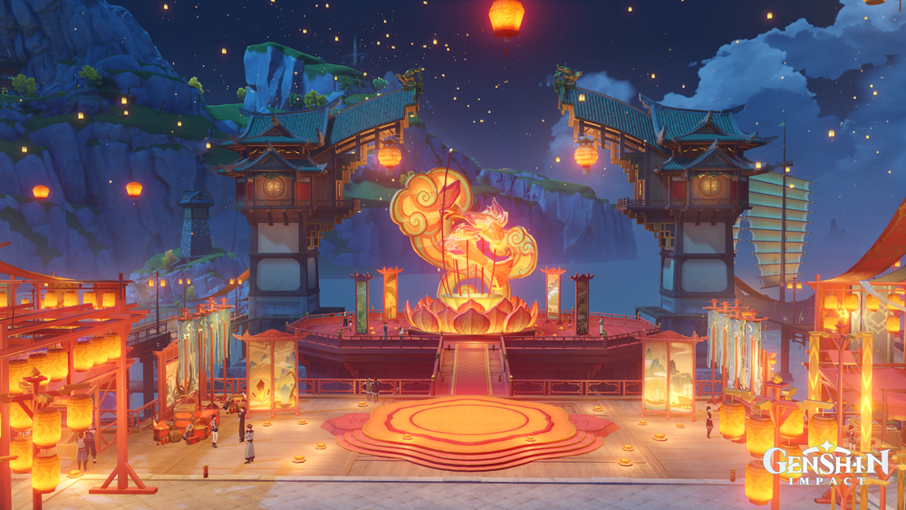
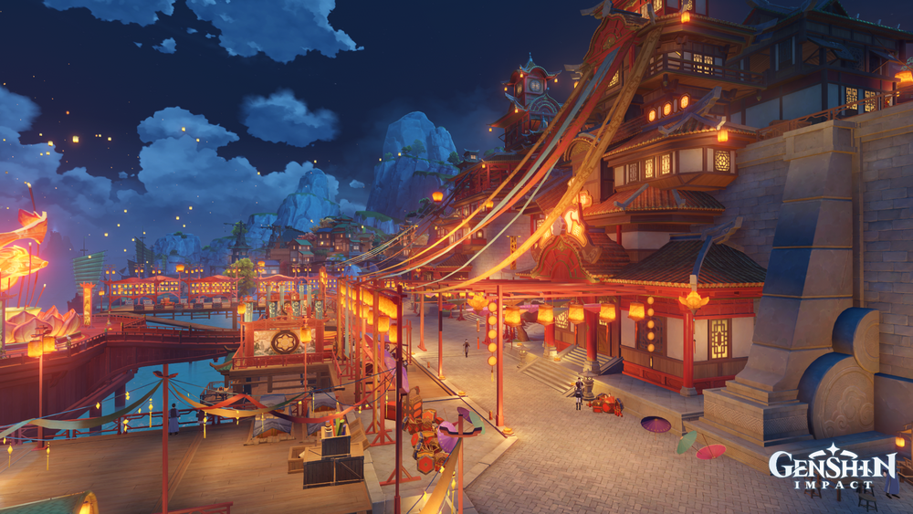
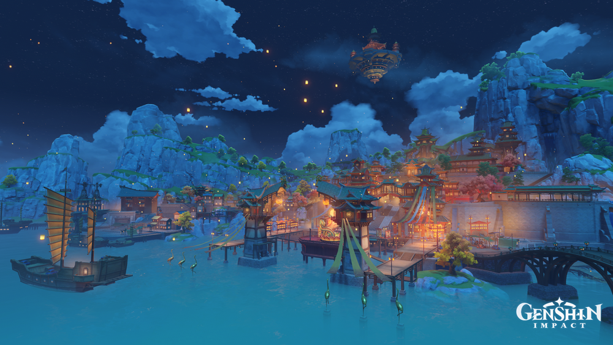
Liyue Harbor's Scenery during Lantern Rite
Lantern Rite is a festival in Liyue celebrate on the first full moon of the year and lasts for five days, but in the game it lasts for 2 weeks. You don't want to miss Lantern Rite. There has been 2 Lantern Rites in the game, last year and one happening right now (Febuary 1, 2022). The history of the Lantern Rite was that after the Archon War, they released lanterns to commemorate those who gave their lives for the war.
 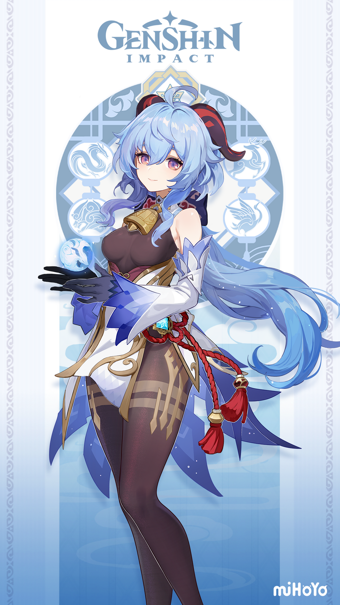
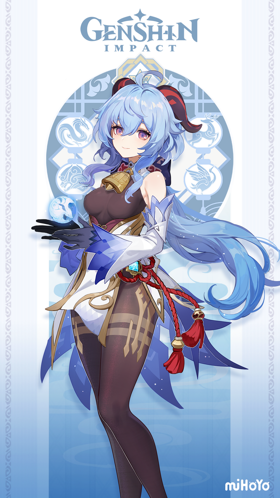
 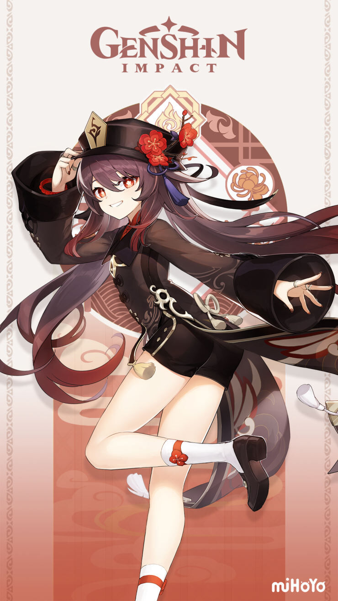
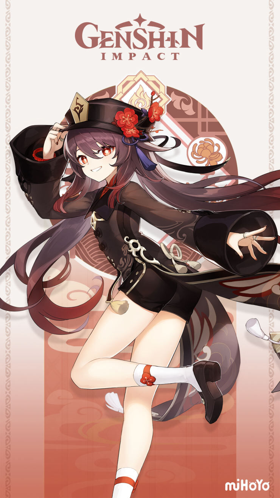